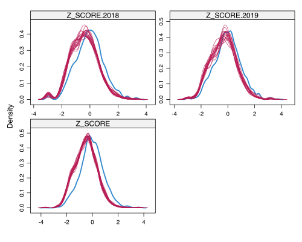
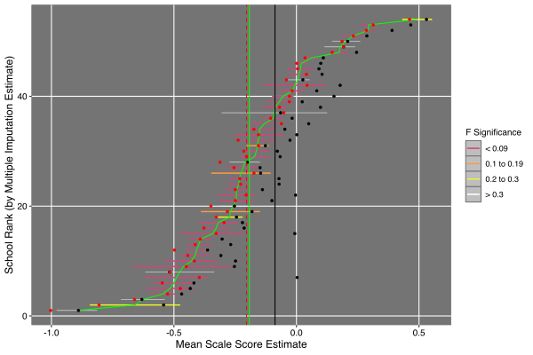
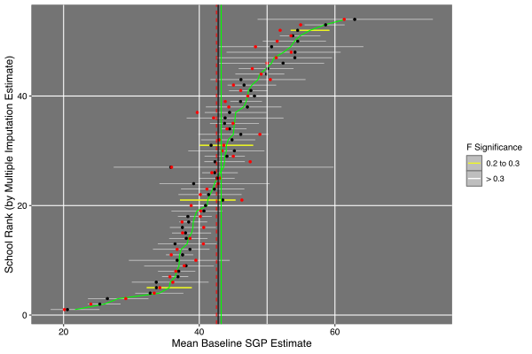

Multiple Imputation with Simulated Missing Data
Virtual Training Session
NCME Annual Meeting 2022
Adam Van Iwaarden
April 13th, 2022
Introduction
While planning and discussing the analysis of student assessment data with our state partners in the spring of 2021, The Center for Assessment received varying anecdotal reports of what might be expected in terms of reduced test participation due to the ongoing COVID-19 pandemic. The only certainty afforded to education state department staff, policy makers and data analysts alike was that the typical regime of census student testing was unlikely and that new methods for confronting missing data problems would be required in short time. In preparation for these unprecedented circumstances, we first conducted simulations to produce varying degrees and patterns of missing data that would then allow for a rigorous exploration of methods to address the problems in data analysis and questions in reporting results to stakeholders and the public.
This vignette is an attempt to reconstruct our early efforts to understand the impact that missing data could have on the Student Growth Percentiles (SGP) analyses we conduct annually in cooperation with state departments of education (typically for accountability purposes), as well as the methodological vetting processes we used to eventually select a multiple imputation approach to address these problems. Although these initial efforts led to the development of customized R functions included in the cfaTools package that allowed us to apply these analytic techniques universally to our state clients, the functions used in this exercise are restricted to the widely available and well documented functions and packages upon which our functions are based. The data management and bookkeeping steps included in this document and supporting R code follow those we used in our data analysis workflow over the past year. Specifically, the section on missing data corresponds to the amputeScaleScore function to simulate, explore and analyze missing data patterns1, and the multiple imputation exercises mirror what is accomplished in the imputeScaleScore function.
As with our early simulation studies, this training vignette uses the sgpData_LONG_COVID data available from the SGPData package. This simulated data conforms to the naming and structural conventions required for data analysis using the SGP package.
The R code used in this vignette is available on Github and the following R packages will be required to re-create the results:
### Load required packages
## Data and data management
require(SGPdata)
require(data.table)
## Missing data simulation, imputation and visualization
require(VIM)
require(mice)
require(miceadds)
require(ggplot2)
## Parametric imputed data analysis
require(lme4)
require(merTools)
## Point estimate data analysis and visualization
require(SGP)
require(gghighlight)Before getting into data simulation and analysis, however, we provide a brief introduction to potential problems missing data poses for statistical analysis and interpretation of student achievement and growth. Resources we have found useful are also provided.
The Missing Data Problem
The issues missing data presents to the analysis, interpretation and reporting of partially observed data are manifold: biased parameter estimates, unrepresentative samples, complication of analytic methods and procedures, and reduced power in statistical tests. Nearly all standard statistical methods assume perfect and complete variables are used, yet even a few unobserved data points can be problematic.
Over the past two decades, researchers in education have benefited from the revolving door of state and federal accountability policies that required census student assessment. As a result, missing data problems, and potential solutions, had received little attention in our field. The luxury of ignoring missing data and student participation rates came to an abrupt end at the onset of the COVID-19 pandemic, and the need to consider the problematic nature of the data will persist into the foreseeable future as we try to gauge the full impact of the pandemic and the nature of student learning recovery. To date the missing data problem in state-level education is two fold: the (nearly) universal absence of data in 2020 after state assessment administrations were cancelled, and the varied levels of student participation (both within and between states).
The absence of 2020 data has required universal approaches to data analysis in 2021; namely ignoring this gap in longitudinal analyses (e.g., skip-year student growth). The varied and complex nature of student participation in 2021, although not as extensive, complicates the 2021 analyses and investigations of pandemic impact and will require on-going attention as recovery is monitored and accountability requirements are re-instituted.
Currently some general points to consider are:
- Low participation does not impact the ability to calculate measures of student growth or pandemic impact (e.g., cohort referenced growth norms nor use of baseline referenced growth norms).
- Point estimates and confidence intervals may be biased, but we are not prevented from making those calculations.
- Low participation does impact comparisons of group level results with historical (e.g.,
- results based upon higher participation rates.
- For example, how should one compare growth and status results for schools in 2019 and 2021 with very different rates of participation.
- Have low rates of participation affected the comparability of student groups and populations of interest (demographic subgroups, schools/districts, etc.)? Are these sub-populations fundamentally different now than they were in previous years or not fully representative due to observed patterns of non-participation?
- Low participation will continue to impact the ability to monitor student recovery, appropriate educational resources where most needed and make complete, accurate and fair accountability decisions for teachers, schools, districts, etc. going forward.
The case for multiple imputation methods
After the cancellation of spring statewide testing in March and April of 2020 we began working with states to investigate the feasibility of calculating student growth despite the 2020 data gap (i.e. skip-year student growth percentiles). Over 2020 we conducted analyses tailored to each states’ context using historical data, coming to the conclusion that skip-year growth calculations were good approximations to those obtained from full calculations. When it became clear that we would need additional tools to address low participation, we considered several alternatives and options to augment the analysis of the observed, imperfect, data (“pairwise deletion” of missing data). Ultimately multiple imputation (MI) was chosen over other alternatives such as maximum likelihood regression approaches or propensity score weighting/matching (although the latter can be used in tandem with MI). The reasons for this choice include:
- Rather than substituting a single value for each missing data point, multiple plausible values are generated using the observed data (including its variability and uncertainty).
- It includes estimates uncertainty due to the missing data (variability between imputed data sets) to give more realistic confidence intervals.
- MI has been used extensively in other fields of research and has been shown to produce valid statistical inference and has a well developed set an analytic tools available on
Rand other software platforms.
Simulating Missing Data
Using data simulations is a useful tool for recognizing and anticipating missing data patterns, preparing for potential problems that might occur and understanding the utility and limitations of certain statistical methods. By starting with a complete simulated data set, removing cases systematically and then performing statistical analyses (MI and subsequent analyses of interest), one can compare the “true” results to those from the missing/observed and imputed data. This section of the training will deal with taking a complete data set and generating missing data patterns similar to those observed in some states in 2021. In the subsequent section we take this data and apply MI in an attempt to reconstruct the complete data structure before comparing several post-imputation analyses using the data in all three states of completion.
Data retrieval and working directory setup
For this part of the training we will use the sgpData_LONG_COVID object from the SGPdata package, which contains simulated data from 2016 to 2023. The data follows the same format as the example long data from the SGP package. It includes 7 years of annual assessment data in two content areas (ELA and Mathematics) and is missing 2020 data to help users model COVID related interruptions to student status and growth. The data comes with a “built-in” impact in 2021 related to the pandemic (although an unperturbed version - "SCALE_SCORE_without_COVID_IMPACT" is also available so that different impact scenarios can be modeled).
This data set contains only “complete” records for students in the longitudinal form in that there are no NA values in any variable. However, as will be discussed below, there are students who repeat grades levels, drop out of the system, have records with gaps between years, etc. In this regard the data does include missing records, particularly for analyses conducted on cross-sectional (wide) data.
A subset of sgpData_LONG_COVID restricted to the 2021 7th grade ELA cohort is used throughout this vignette. Our interest in this data will be to take a complete subset of the data and create missing data patterns only in the student score variables. No demographic, school/district identifiers, etc. will be made missing. These would be similar situations we have dealt with in which students are known to be enrolled in a school, but were not tested for any number of reasons (illness, refusal, school context etc.). This information is critical in being able to later use imputed data to estimate school and sub-group level impact of the COVID pandemic.
The following code defines the cohort of interest, retrieves and subsets the data, and returns it in a wide format2. A new variable is also created in this step - a standardized scale score (Z_SCORE), which is standardized using 2019 as a reference year for all years.
## Define the cohort of interest
cohort.grades <- c("4", "5", "7") # All `classes` must match - GRADE and YEAR are characters.
content.areas <- rep("ELA", 3)
cohort.years <- c("2018", "2019", "2021")
current.year <- tail(cohort.years, 1)
### Data retrieval
Demonstration_COVID_Data <- SGPdata::sgpData_LONG_COVID
source("Missing_Data_Multiple_Imputation/Helper_Scripts/Data_Retrieval_Initial.R", local = TRUE)
## Returns several data objects, but `wide_data` is the main one we'll use.Inspecting the wide_data object returned from this reveals that missing data is already present even though all cases in the original sgpData_LONG_COVID object are complete. The conversion from long to wide data reveals the presence of students who have disappeared from the system, repeated a grade, etc. and now show up as missing records in some years. This is a valuable lesson that even when data may be presented as “complete”, that assumption may not hold in all contexts.
In order to start with complete data for this exercise, we will remove any rows with missing scores.
wide_data <- wide_data[!(is.na(Z_SCORE.2018) | is.na(Z_SCORE.2019) | is.na(Z_SCORE.2021)),]If we compare the number of rows in wide_data before and after this filter, we see that around 32% of the data is now removed. We will use that as a rough target for added missingness going forward.
The ampute function
The mice::ampute function was developed to provide a systematic process for simulating missing data. A user can specify a number of parameters including the proportion, patterns and factors (observed variables) that contribute to missing data. The author of this function, Rianne Schouten, provides an excellent vignette online.
We will generate missing data based solely on prior achievement at the student and school aggregate levels. Demographic and other variables could also be factored in as desired. For example, if it is assumed that students in urban areas may be more likely to be missing, school size could be included as a proxy for this.
As a first step, we take a subset of the achievement variables from the wide_data object and create a school aggregate to use with the ampute function to simplify the following steps.
## The variable base (long) names that will be factored into missing data patterns
ampute.factors <- c("SCHOOL_NUMBER", "Z_SCORE")
## Select the subset of relevant variables from `wide_data`
amp.vars <- grep(paste(ampute.factors, collapse="|"), names(wide_data))
ampute_subset <- wide_data[, ..amp.vars]
## Summarize 2021 students' prior (2019) scores for their 2021 schools
ampute_subset[, MEAN_PRIOR_Z := mean(Z_SCORE.2019), by = "SCHOOL_NUMBER"]
ampute_subset[, grep("SCHOOL_NUMBER", names(ampute_subset)) := NULL]
Using ampute funtion defaults
To illustrate an ampute function use case we begin by feeding the data and examining the results “out-of-the-box” using the defaults.
## Run `ampute` out-of-the-box and explore results
test.result <- mice::ampute(ampute_subset)
md.pattern(test.result$amp, rotate.names = TRUE)## Z_SCORE.2018 Z_SCORE.2019 Z_SCORE.2021 MEAN_PRIOR_Z
## 3081 1 1 1 1 0
## 842 1 1 1 0 1
## 813 1 1 0 1 1
## 806 1 0 1 1 1
## 799 0 1 1 1 1
## 799 806 813 842 3260test.result$prop## [1] 0.5test.result$patterns## Z_SCORE.2018 Z_SCORE.2019 Z_SCORE.2021 MEAN_PRIOR_Z
## 1 0 1 1 1
## 2 1 0 1 1
## 3 1 1 0 1
## 4 1 1 1 0There are several things to note about the data amputation results here. The default proportion of missing cases (prop = 0.5) is higher than what we want to replicate (~0.325). In the md.pattern plot we see that the default missing patterns (red squares indicate missing cases are present) include the aggregate school measures we created. This makes no sense in our context - we only want missing values in the student-level variables. Also, there are only patterns in which one variable is missing per row, where we would actually like to see patterns where students may be missing multiple years of data (for example, only having data for 2021).
Missing data patterns
To customize the patterns that are included, we will supply a customized data.frame to the patterns argument. We will also specify the proportion of missing values we want to achieve (overall) in the data.
my.patterns <- data.frame(t(matrix(c(
# Some we want from the default
c(0, 1, 1, 1), # only missing 2018
c(1, 0, 1, 1), # only missing 2019
c(1, 1, 0, 1), # only missing 2021
# Some we want to add to default
c(0, 0, 1, 1), # missing 2018 & 2019 (only 2021 score)
c(0, 1, 0, 1), # missing 2018 & 2021
c(1, 0, 0, 1) # missing 2019 & 2021
), nrow = 4)))
test.result <- ampute(ampute_subset, prop = 0.325, patterns = my.patterns)
md.pattern(test.result$amp, rotate.names = TRUE)## MEAN_PRIOR_Z Z_SCORE.2018 Z_SCORE.2021 Z_SCORE.2019
## 4288 1 1 1 1 0
## 339 1 1 1 0 1
## 319 1 1 0 1 1
## 372 1 1 0 0 2
## 339 1 0 1 1 1
## 341 1 0 1 0 2
## 343 1 0 0 1 2
## 0 1023 1034 1052 3109test.result$prop## [1] 0.325test.result$freq## [1] 0.1666667 0.1666667 0.1666667 0.1666667 0.1666667 0.1666667Frequency of patterns
The plot produced now shows that we have more interesting patterns of missing data. However, if we look at the bottom row of numbers, we see that the frequency of missing data is roughly equal for each variable. The output from test.result$freq shows that each pattern is missing at the same rate, which does not match what we want to simulate pre-pandemic or in 2021.
my.freq <- c(0.1, # only missing 2018 - fairly common previously
0.05, # only missing 2019 - less common
0.50, # only missing 2021 - most likely
0.1, # only 2021 scores - students new to the system
0.175, # only 2019 scores - fairly common
0.075 # only 2018 scores - less common, but still occurs
) # frequencies must sum to 1
test.result <- ampute(ampute_subset, prop = 0.3, patterns = my.patterns, freq = my.freq)
md.pattern(test.result$amp, plot = FALSE)## MEAN_PRIOR_Z Z_SCORE.2019 Z_SCORE.2018 Z_SCORE.2021
## 4372 1 1 1 1 0
## 993 1 1 1 0 1
## 199 1 1 0 1 1
## 342 1 1 0 0 2
## 102 1 0 1 1 1
## 146 1 0 1 0 2
## 187 1 0 0 1 2
## 0 435 728 1481 2644Missing data exploration/visualization
With a promising set of amputed data, we can further evaluate it to make sure it looks like what we wanted. In our assumptions, we expect to see more missing data for students with lower 2019 scale scores. The following visualizations from the VIM package are helpful in exploring missing data relationships. See the VIM package for more context on these plots. In general, blue means observed data, red means missing. A good introduction is given here.
The first VIM plot produced is a set of histograms that compares missing data patterns in 2018 to 2019 with those from 2019 to 2021. Here we see that we have been (quite!) successful in introducing a relationship between prior achievement and missingness. The 2019 missing cases are more-or-less randomly distributed given 2018 observed scores, but the 2021 missing case distribution is heavily concentrated in lower prior score observations.
### Missing data visualizations with VIM
# 2019
histMiss(as.data.frame(wide_data[, c("Z_SCORE.2018", "Z_SCORE.2019")]),
main = "Missing 2019 to 2018", breaks=25, interactive=FALSE, only.miss=FALSE)
abline(v=0, col="green", lwd=2)
# 2021
histMiss(as.data.frame(wide_data[, c("Z_SCORE.2019", "Z_SCORE.2021")]),
main = "Missing 2021 to 2019", breaks=25, interactive=FALSE, only.miss=FALSE)
abline(v=0, col="green", lwd=2)We can also create mosaic plots that provide interesting comparisons of missing data by multiple demographic characteristics. For example, we can look at missingness by ethnicity and economic status (as indicated by free/reduced lunch qualification).
mosaicMiss(as.data.frame(droplevels(wide_data[, c("ETHN", "FRL", "Z_SCORE.2021")])),
highlight = 3, plotvars = 1:2, miss.labels = FALSE, only.miss=FALSE)Based on this visualization, we might conclude that a relationship exists between FRL status and missing data. We know from the ampute specification that FRL status was not factored in, and that the relationship shown here is actually indicative of an effect of FRL status on achievement.
We can look at the amputed data relative to what we know to be “true”. Even though we specified a weak MNAR missing pattern, we see that missingness is highly correlated with unobserved (current) score because we have used prior scores to determine the probability of being missing. Given their high correlation, this plays out in the amputed data as well.
histMiss(as.data.frame(wide_data[, c("COMPLETE_Z.2021", "Z_SCORE.2021")]),
main = "2021 Missing by 2021 Complete", breaks=25, interactive=FALSE, only.miss=FALSE)
abline(v=0, col="green", lwd=2)
Multiple Imputation
Multiple imputation (MI) is a simulation-based procedure. Its purpose is not to re-create the (true) individual missing values, but to achieve valid statistical inference in the presence of missing data (Schafer, 1997). MI methods use information from the observed data to generate a set of plausible values for the missing observations in the data. This procedure is repeated many times to account for sampling error that arises when generating these values, and model parameters are pooled across the imputed data sets (Enders, 2010; Fox & Weisberg, 2018). As Fox and Weisberg (2018) write, MI “takes into account not only uncertainty due to residual variation - that is, the inability to predict missing values without error from the observed data (e.g., by sampling from the estimated error distribution for a continuous variable or sampling from the estimated conditional probability distribution of a factor) - but also uncertainty in the parameter estimates used to obtain the predictions (by sampling from the estimated distribution of the parameters of the imputation model)” (p. 3).
There are numerous MI methods available, largely differentiated by the model used to generate the imputed values. MI methods can be broadly grouped into those that use joint modeling (JM) or fully conditional specification (FCS). JM assumes that the data come from a multivariate distribution and imputations are drawn from a fitted distribution (typically multivariate normal). FCS, also known as MI with chained equations (MICE), is a semi-parametric approach that imputes multivariate missing data one variable at a time in an iterative fashion for each incomplete variable. It is parametric in that each variable can potentially have a different imputation model with a set of predictors that explain the missing data. It is non-parametric in that the form (e.g. linear) of the imputation model is specified depending on the type of variable (binary, count, ordinal, continuous, etc.). Trade offs between the two types include better theoretical underpinnings in JM and flexibility while preserving unique features of the data with FCS (Van Buuren, 2018).
The three steps of multiple imputation
Regardless of the chosen algorithm(s) or modeling approach, the typical MI workflow can be reduced to three steps in which information from the observed data is used to generate parameter estimates:
-
Imputation: A prediction model generates a set of plausible values for the missing observations, resulting in
Mimputed data sets. -
Analysis: The analysis (e.g., baseline SGPs) is conducted on each of the
Mdata sets. -
Pooling: Parameter and (perhaps more importantly) uncertainty estimates are constructed by pooling across the
Manalyses.
The figure below (Figure 5.1 in Van Buuren, 2018) provides a nice visual synopsis of the MI workflow.

In the context of learning loss analyses, we have used MI to estimate mean scale score and baseline SGP values to draw comparisons between pre- and post-pandemic test results. Notably, such comparisons are not aimed at accountability initiatives, but rather to provide states, districts and schools with a better understanding of how student learning was impacted. Such information can inform how states, districts and schools can better support students moving forward by assessing their recovery.
Choosing an imputation strategy for Step 1
In the simulation studies and MI method vetting process the Center for Assessment conducted in late spring 2021, at least eight MI algorithms were applied and compared. These included:
- One-level predictive mean matching (
mice::mice.impute.pmm) - Multi-level modeling with predictive mean matching (
miceadds::mice.impute.2l.pmm) - Cross-sectional multi-level modeling with pan (
mice::mice.impute.2l.pan) - Cross-sectional multi-level modeling with the lmer function (
mice::mice.impute.2l.lmer) - Longitudinal multi-level modeling with pan (
mice::mice.impute.2l.pan) - Longitudinal multi-level modeling with lmer (
mice::mice.impute.2l.lmer); - Quantile regression (
Qtools::mice.impute.rrq) - Random forests (
mice::mice.impute.rf)
These simulation studies were summarized and documented meticulously by the Center’s 2021 intern, Allie Cooperman, and are available on her internship website.
Overall, the cross-sectional modeling with pan demonstrated the best performance among the examined methods. Specifically, it was most often able to maintain average percent bias for school level aggregates for achievement (mean scale scores) and growth (mean baseline SGPs) below 5%, while simultaneously constructing confidence intervals with higher coverage rates. Additionally, it most often failed to reject the null hypothesis that the imputed and true values are equivalent. In other words, the other MI methods more often found statistically significant differences (using the simplified F1 statistic of Vink and Van Buuren, 2014) between the imputed and true average achievement and growth values. Finally, it was the only method found to be negatively related to scale score bias, suggesting reduced scale score bias compared to the “observed” condition.
Although this modeling choice worked well for our needs, it is important to stress that these choices will depend on, and should be driven by, the specific contexts of the data and the statistical model(s) to be used in the analysis step of the workflow. There is no “one-size-fits-all” solution.
In the following sections we again re-create steps taken in our initial investigations in the spring of 2021 to evaluate a few of the available MI methods.
Multiple imputation with simulated missing data
Continuing where we left off with the simulation of missing data, we will first select the factors we want to include in our imputation model(s). We will feign ignorance of the underlying missing data generating process for now and specify the use of student level achievement, FRL status as well as school level aggregates of these factors. Again, the only variables with missing data in them are the student level (standardized) scale scores, so these will be the only variables being imputed. These would be similar to students who were known to be enrolled in a school, but were not tested.
Note we are also keeping our complete (“true”) score values in this subset. These will NOT be used for imputation (cheating!), but we want to keep them in our data set for subsequent analyses. This can be done for any number of variables of interest (e.g., demographics, indicators of mode of instruction, etc.), but they must be given special attention to ensure they are/not used as imputation predictors as desired.
impute.factors <- c("SCHOOL_NUMBER", "Z_SCORE", "FRL") # paste(c("ID", "COMPLETE_Z", impute.factors), collapse="|")
### Select subset of `wide_data` that will be used for imputation and/or subsequent analyses
impute.vars <- grep("^ID$|COMPLETE_Z|Z_SCORE|SCHOOL_NUMBER|FRL", names(wide_data))
impute_subset <- wide_data[, ..impute.vars]
setnames(impute_subset, gsub(paste0(".", current.year), "", names(impute_subset)))
### Create institutional level averages of achievement and economic disadvantage
impute_subset[, MEAN_INST_PRIOR_SCORE := mean(Z_SCORE.2019, na.rm = TRUE), by = "SCHOOL_NUMBER"] #
impute_subset[, PERCENT_INST_FRL := mean(FRL, na.rm = TRUE), by = "SCHOOL_NUMBER"]Next we will define a few key parameters for the MI process. These include the number of imputed data sets we want (M), the number of iterations we will allow for each imputation (MAXIT) to converge on an answer and the imputation algorithm (impute.method). We also produce default method and predictorMatrix objects for those arguments.
### Specify imputation parameters for `mice::mice`
M <- 20
MAXIT <- 5
impute.method <- "pmm"
my.methods <- mice::make.method(data=impute_subset)
my.predMtrx <- mice::make.predictorMatrix(data=impute_subset)We will modify the assignment of method and predictors to ensure that we are using our chosen imputation methods and prediction factors. Here we assign the score variables the impute.method of choice (redundant here as pmm is the default in mice for most variable types) and prevent ID and the complete scores from being either predicted or used in any predictions. Note that only variables with missing data will be assigned a method from and all variables are used to predict others by default in make.method and make.predictorMatrix.
my.methods[grep("^Z_SCORE", names(my.methods))] <- impute.method
my.predMtrx[, "ID"] <- 0
my.predMtrx[, "SCHOOL_NUMBER"] <- 0
my.predMtrx[, grep("COMPLETE_Z", rownames(my.predMtrx))] <- 0 # i.e. "Nothing used to predict it" -- redundant my.methods["COMPLETE_Z"] == ""
my.predMtrx[grep("COMPLETE_Z", rownames(my.predMtrx)), ] <- 0 # i.e. "It's used to predict nothing"We will also use schools as a (categorical) predictor of the missing student scores.
impute_subset[, SCHOOL_NUMBER := as.character(SCHOOL_NUMBER)]
my.predMtrx["SCHOOL_NUMBER", grep("^Z_SCORE", names(my.methods))] <- 1Step 1 - data imputation
We are now ready to create our first set of imputed data.
imputed_results <- mice::mice(data = impute_subset,
method = my.methods,
predictorMatrix = my.predMtrx,
m = M, maxit = MAXIT, seed = 719589L, print = FALSE)That was fast! We should look at a few diagnostic plots to assess how the process went. This first plot looks at the convergence of the M imputations over the MAXIT iterations.
plot(imputed_results)The second plot looks at the distribution densities of the M imputations (in red) compared to the observed distribution (blue) for each of the imputed variables.
densityplot(imputed_results)
The final diagnostic plot is a custom set of scatter plots that allow us to compare the bivariate distribution of the complete, imputed and observed data (top to bottom). Plots in the left column are the prior years (2018 and 2019) and those on the right are for 2019 and 2021.

Step 2/3 - imputation analysis and results pooling
We will now conduct M sets of analyses and one set of pooled results for the imputed data. We also run identical analyses using both the complete and observed data. We proceed by first collecting the imputations into a list object and converting each of those as well as the wide_data back into longitudinal form.
### Collect all imputation results in a list length = M
res <- miceadds::mids2datlist(imputed_results)
### Convert data (complete, missing, and imputed) to long format
source("Missing_Data_Multiple_Imputation/Helper_Scripts/Data_Retrieval_for_Analysis.R")
## Returns objects `long_complete`, `long_amputed` and `res_long`Linear mixed effects model
The first post-imputation analysis we will run is a linear mixed effects model. This has been selected because it is a fairly interesting, and popular, model for analyzing longitudinal data for students nested within schools. It also provides us with results that have well documented and operationalized procedures for pooling results. Specifically, in this exercise we submit that the parameter of interest is a fixed effect estimate for COVID impact. We can easily get a pooled estimate of this parameter along with standard errors and t values.
frmla <- as.formula("Z_SCORE ~ YEAR + COVID_IMPACT*FRL + (COVID_IMPACT | SCHOOL_NUMBER/ID)")
lmer.ctl <- lmerControl(check.conv.grad = .makeCC("warning", 0.02, NULL))
true_mod <- lmer(formula = frmla, data = long_complete, control = lmer.ctl)
miss_mod <- lmer(formula = frmla, data = long_amputed, control = lmer.ctl)
imp_mods <- lmerModList(formula=frmla, data = res_long, control = lmer.ctl)
### Collate and print model (fixed effects) estimate comparison
source("Missing_Data_Multiple_Imputation/Helper_Scripts/MI_LME_Model_Comp.R")##
##
## | ESTIMATE | STD ERR |
## Fixed Effects | ------- ------- ------- | ------- ------- ------- |
## Coefficients | True Missing Imputed | True Missing Imputed |
## ----------------- | ------- ------- ------- | ------- ------- ------- |
## (Intercept) | -56.67 -58.77 -59.7 | 15.2 16.69 35.64 |
## COVID_IMPACT | -0.19 -0.18 -0.19 | 0.03 0.03 0.03 |
## COVID_IMPACT:FRL | 0.02 0.03 0.03 | 0.02 0.02 0.02 |
## FRL | -0.42 -0.42 -0.42 | 0.02 0.02 0.02 |
## YEAR | 0.03 0.03 0.03 | 0.01 0.01 0.01 |
## t VALUE |
## ------- ------- ------- |
## True Missing Imputed |
## ------- ------- ------- |
## -3.73 -3.52 -1.68 |
## -6.2 -5.7 -6.67 |
## 1.25 1.83 1.81 |
## -17.61 -17.57 -17.83 |
## 3.74 3.53 3.9 |Baseline student growth percentiles
Student growth percentiles, being quantities associated with each individual student, can be easily summarized across numerous grouping indicators to provide summary results regarding growth. Cohort referenced percentiles, being annually normed across all students in the state, the median of all student growth percentiles in any grade is 50 when we have perfect data fit. The median of a collection of growth percentiles is used as the measure of central tendency to summarize the distribution as a single number. Median growth percentiles well below 50 represent growth less than the state “average” and median growth percentiles well above 50 represent growth in excess of the state “average”.
It is important to note how, at the entire state level, the normative growth information returns very little information. What the results indicate is that a typical (or average) student in the state demonstrates 50th percentile growth. That is, a “typical students” demonstrate “typical growth”. The power of the normative results follows when subgroups are examined (e.g., schools, district, ethnic groups, etc.). Examining subgroups in terms of the median of their student growth percentiles, it is then possible to investigate why some subgroups display lower/higher student growth than others. Moreover, because the subgroup summary statistic (i.e., the median) is composed of many individual student growth percentiles, one can break out the result and further examine the distribution of individual results.
Baseline SGPs provide us with a way to look at normative growth through another lens. Rather than considering a single year’s cohort, baseline SGPs are referenced against a cohort of interest. This could be a “super-cohort” comprised of several years of students linked by common course/grade progressions, or a single particular cohort. In the COVID impact analyses, the 2019 cohorts were used to establish the baselines. Baseline comparisons allow us to examine whether or not the system as a whole might be improving (or declining) over time relative to the established baseline. A major assumption required here is that the scale scores are well anchored. If this assumption does not hold, then any deviation from “typical” growth may be purely an artifact of the test scaling procedure.
In the case of COVID impact analyses, we expected to (and did) see median SGP values well below 50 at state, district and school levels. As we move beyond 2021, we hope to see that systems are improving (recovering) over time. We would see that improvement in the form of median SGPs that are greater than 50 (what was typical growth in the past would now be lower growth).
The following script creates baseline SGPs for the 2021 7th grade ELA cohort using the complete, missing/observed and 20 imputed data sets. Several objects of interest are returned including Complete_SGP and Missing_SGP, which are typical SGP class objects from the associated data. The 20 analyses using imputation data are combined into a single data table - Imputed_SGP_Data. Estimates for school level values (mean scores, pooled errors, etc.) are calculated and available in the SGP_Imputation_Summaries object.
## Run Baseline SGP analyses using complete, missing (observed), and imputed data
source("Missing_Data_Multiple_Imputation/Helper_Scripts/SGP_Baseline_Analyses.R")
## Returns `Complete_SGP`, `Missing_SGP`, `Imputed_SGP_Data` and `SGP_Imputation_Summaries`.For our analyses, we wanted to quantify COVID impact at various institutional and subgroup levels in metrics that would 1) be meaningful to both stakeholders and fellow researchers and 2) communicate additional uncertainty due to missing data. Some of the statistics we calculated included:
- Mean/median scale scores (2021 status)
- Percent Proficient (2021 status)
- Mean/median baseline SGPs (2021 growth)
- Change scores in the above status and growth metrics (2019 to 2021)
- Effect sizes for 2019 to 2021 changes
The caterpillar plots below show 2021 school mean scale scores and baseline SGPs estimated from the analyses we just ran. In all plots red points and lines correspond to values from the complete data analysis, observed values are black, and green pertains to imputations. Error bars are associated with the imputations and color coded by significance levels for the difference between the imputed and observed values.
Plots similar to these were originally developed during the imputation method vetting process, and the F statistics corresponded to the difference between the imputations and the “true” complete values. The difference in these represent how we used such error bars and statistics with states’ observed/missing data to flag schools where the MI analyses produced significantly different assessments of schools’ status or growth than what was indicated in the missing data.
source("Missing_Data_Multiple_Imputation/Helper_Scripts/SGP_MI_Caterpillar_Plots.R")
## Creates caterpillar plots for school-level mean achievement and growth.
## These include bands of uncertainty associated with the imputations.
The status plots suggest that the pmm method does a decent job of recovering the school mean scale scores. The second plot “dissects” the caterpillar and shows the relationship between percent missing, mean scale scores and school size. As this plot suggests, and what we found in our simulations, is that the accuracy of the imputations has less to do with the percent missing in a school than it does with the size of the school.
The growth plots show that the pmm method does not really help much with recovering “true” typical school growth. It is, on average, little changed from the observed values. This is also something that we found regularly in our simulation studies. Overall, measures of growth with missing data is less biased than measures of status (probably due to the fact that growth takes students’ prior achievement into account), but MI does less to correct for what bias is there.
We now demonstrate how to change the imputation method and re-run the analyses.
Data imputation with 2l.pan
In order to change the imputation method, we will repeat the steps after we set up the impute_subset object. This can be an iterative process changing imputation methods, predictor factors or any other number of parameters. Here we will use the cross-sectional model (students nested within schools) that was found to be superior for correcting missing data bias in school mean/median status and growth. We will also remove FRL and PERCENT_INST_FRL from the predictors given that we know those factors were not part of our missing data generation process (and may have contributed to over-estimating the impact from other imputation method comparisons not shown here).
### Specify imputation parameters for `mice::mice`
impute.method <- "2l.pan"
## Cluster identifiers need to be integers for most 2-level methods
impute_subset[, SCHOOL_NUMBER := as.integer(SCHOOL_NUMBER)]
my.methods <- mice::make.method(data=impute_subset)
my.methods[grep("^Z_SCORE", names(my.methods))] <- impute.method
my.predMtrx <- mice::make.predictorMatrix(data=impute_subset)
my.predMtrx[, "ID"] <- 0
my.predMtrx[, "SCHOOL_NUMBER"] <- 0
my.predMtrx[grep("^Z_SCORE", names(my.methods)), "SCHOOL_NUMBER"] <- -2
my.predMtrx["SCHOOL_NUMBER", grep("^Z_SCORE", names(my.methods))] <- 2
my.predMtrx[, grep("COMPLETE_Z", rownames(my.predMtrx))] <- 0 # i.e. "Nothing used to predict it" -- redundant my.methods["COMPLETE_Z"] == ""
my.predMtrx[grep("COMPLETE_Z", rownames(my.predMtrx)), ] <- 0 # i.e. "It's used to predict nothing"
my.predMtrx["FRL",] <- 0
my.predMtrx["PERCENT_INST_FRL",] <- 0
my.predMtrx[, "FRL"] <- 0
my.predMtrx[, "PERCENT_INST_FRL"] <- 0Step 1b - create new imputed results
We are now ready to create our SECOND set of imputed data.
imputed_results <- mice::mice(data = impute_subset,
method = my.methods,
predictorMatrix = my.predMtrx,
m = M, maxit = MAXIT, seed = 719589L, print = FALSE)We will again look at a few diagnostic plots to assess how the process went. This first plot looks at the convergence of the M imputations over the MAXIT iterations.
plot(imputed_results)The second plot looks at the distribution densities of the M imputations (in red) compared to the observed distribution (blue) for each of the imputed variables.
densityplot(imputed_results)
Step 2/3 - imputation analysis and pooling with 2l.pan
### Collect all imputation results in a list length = M
res <- miceadds::mids2datlist(imputed_results)
### Convert data (complete, missing, and imputed) to long format
source("Missing_Data_Multiple_Imputation/Helper_Scripts/Data_Retrieval_for_Analysis.R")
## Returns objects `long_complete`, `long_amputed` and `res_long`Linear mixed effects model
frmla <- as.formula("Z_SCORE ~ YEAR + COVID_IMPACT*FRL + (COVID_IMPACT | SCHOOL_NUMBER/ID)")
lmer.ctl <- lmerControl(check.conv.grad = .makeCC("warning", 0.02, NULL))
true_mod <- lmer(formula = frmla, data = long_complete, control = lmer.ctl)
miss_mod <- lmer(formula = frmla, data = long_amputed, control = lmer.ctl)
imp_mods <- lmerModList(formula=frmla, data = res_long, control = lmer.ctl)
print(comp_table, class = F, row.names = F) # print out original table from `pmm`## | ESTIMATE | STD ERR |
## Fixed Effects | ------- ------- ------- | ------- ------- ------- |
## Coefficients | True Missing Imputed | True Missing Imputed |
## ----------------- | ------- ------- ------- | ------- ------- ------- |
## (Intercept) | -56.67 -58.77 -59.7 | 15.2 16.69 35.64 |
## COVID_IMPACT | -0.19 -0.18 -0.19 | 0.03 0.03 0.03 |
## COVID_IMPACT:FRL | 0.02 0.03 0.03 | 0.02 0.02 0.02 |
## FRL | -0.42 -0.42 -0.42 | 0.02 0.02 0.02 |
## YEAR | 0.03 0.03 0.03 | 0.01 0.01 0.01 |
## t VALUE |
## ------- ------- ------- |
## True Missing Imputed |
## ------- ------- ------- |
## -3.73 -3.52 -1.68 |
## -6.2 -5.7 -6.67 |
## 1.25 1.83 1.81 |
## -17.61 -17.57 -17.83 |
## 3.74 3.53 3.9 |### Collate and print model (fixed effects) estimate comparison
source("Missing_Data_Multiple_Imputation/Helper_Scripts/MI_LME_Model_Comp.R")##
##
## | ESTIMATE | STD ERR |
## Fixed Effects | ------- ------- ------- | ------- ------- ------- |
## Coefficients | True Missing Imputed | True Missing Imputed |
## ----------------- | ------- ------- ------- | ------- ------- ------- |
## (Intercept) | -56.67 -58.77 -61.11 | 15.2 16.69 58.43 |
## COVID_IMPACT | -0.19 -0.18 -0.19 | 0.03 0.03 0.03 |
## COVID_IMPACT:FRL | 0.02 0.03 0.04 | 0.02 0.02 0.02 |
## FRL | -0.42 -0.42 -0.41 | 0.02 0.02 0.02 |
## YEAR | 0.03 0.03 0.03 | 0.01 0.01 0.01 |
## t VALUE |
## ------- ------- ------- |
## True Missing Imputed |
## ------- ------- ------- |
## -3.73 -3.52 -1.05 |
## -6.2 -5.7 -6.23 |
## 1.25 1.83 2.72 |
## -17.61 -17.57 -17.32 |
## 3.74 3.53 3.97 |Baseline student growth percentiles
## Run Baseline SGP analyses using complete, missing (observed), and imputed data
source("Missing_Data_Multiple_Imputation/Helper_Scripts/SGP_Baseline_Analyses.R")
## Returns `Complete_SGP`, `Missing_SGP`, `Imputed_SGP_Data` and `SGP_Imputation_Summaries`.source("Missing_Data_Multiple_Imputation/Helper_Scripts/SGP_MI_Caterpillar_Plots.R")
## Creates caterpillar plots for school-level mean achievement and growth.
## These include bands of uncertainty associated with the imputations.


Things to consider:
- We have only looked at a cohort that had prior scores available. The situation is more difficult when no prior achievement information is available
- We are only looking at 2021 results/model output. We would need to have some comparable results from 2019 in order to make meaningful assessment of COVID impact (particularly at the school level)
Citations and References
Missing Data Simulation
Brand, Jaap. 1999. “Development, Implementation and Evaluation of Multiple Imputation Strategies for the Statistical Analysis of Incomplete Data Sets.” PhD thesis.
Schouten, Rianne Margaretha, Peter Lugtig, and Gerko Vink. 2018. “Generating Missing Values for Simulation Purposes: A Multivariate Amputation Procedure.” Journal of Statistical Computation and Simulation 88 (15): 2909–30.
Schouten, Rianne Margaretha, and Gerko Vink. 2021. “The Dance of the Mechanisms: How Observed Information Influences the Validity of Missingness Assumptions.” Sociological Methods & Research 50 (3): 1243–58.
Multiple Imputation
Demirtas, H. (2004). Simulation driven inferences for multiply imputed longitudinal datasets. Statistica neerlandica, 58(4), 466-482. https://doi.org/10.1111/j.1467-9574.2004.00271.x
Enders, C. K. (2010). Applied missing data analysis. New York, NY: The Guilford Press.
Fox, J. & Weisberg, S. (2018). Multiple imputation of missing data. Appendix of An R companion to applied regression, third edition. Thousand Oaks, CA: Sage Publications, Inc.
Miri, H. H., Hassanzadeh, J., Khaniki, S. H., Akrami, R., & Sirjani, E. (2020). Accuracy of five multiple imputation methods in estimating prevalence of Type 2 diabetes based on STEPS surveys. Journal of Epidemiology and Global Health, 10(1), 36-41. https://doi.org/10.2991/jegh.k.191207.001
Nguyen, C. D., Carlin, J. B., & Lee, K. J. (2017). Model checking in multiple imputation: An overview and case study. Emerging Themes in Epidemiology, 14(8). https://doi.org/10.1186/s12982-017-0062-6
Qi, L., Wang, Y.-F., & He, Y. (2010). A comparison of multiple imputation and fully augmented weighted estimators for Cox regression with missing covariates. Statistics in Medicine, 29(25), 2592-2604. https://doi.org/10.1002/sim.4016
Schafer, J. L. ,1997. Analysis of Incomplete Multivariate Data, New York: Chapman and Hall
Stuart, E. A., Azur, M., Frangakis, C., & Leaf, P. (2009). Multiple imputation with large data sets: A case study of the Children’s Mental Health Initiative. American Journal of Epidemiology, 169(9), 1133–1139. https://doi.org/10.1093/aje/kwp026
Van Buuren, S. (2018). Flexible imputation of missing data. CRC Press. https://stefvanbuuren.name/fimd/
Van Buuren, S., & Groothuis-Oudshoorn, K. (2011). mice: Multivariate imputation by chained equations in R. Journal of Statistical Software, 45(3), 1-67. https://www.jstatsoft.org/v45/i03/
Vink, G., & Van Buuren, S. (2014). Pooling multiple imputations when the sample happens to be the population. arXiv Pre-Print 1409.8542.
Zhao, J. H., & Schafer, J. L. (2018). pan: Multiple imputation for multivariate panel or clustered data. R package version 1.6.
Data and Analytics
Bates, D., Maechler, M., Bolker, B., & Walker, S. (2015). Fitting linear mixed-effects models using lme4. Journal of Statistical Software, 67(1), 1-48. https://doi.org/10.18637/jss.v067.i01.
Betebenner, D. W., Van Iwaarden, A. R., Domingue, B. & Shang, Y. (2022). SGP: Student Growth Percentiles & Percentile Growth Trajectories. R package version 1.9-9.987. URL: https://sgp.io
Betebenner, D. W., Van Iwaarden, A. R., & Domingue, B. (2021). SGPdata: Exemplar data sets for student growth percentile (SGP) analyses. R package version 25.1-0.0. https://centerforassessment.github.io/SGPdata/
A vignette associated with this function is also available in the package documentation↩︎
Lengthy sections of data formatting and analysis code that do not directly deal with missing data generation, imputation, or data analysis have been extracted to standalone
Rscripts in the “Missing_Data_Multiple_Imputation/Helper_Scripts” directory↩︎